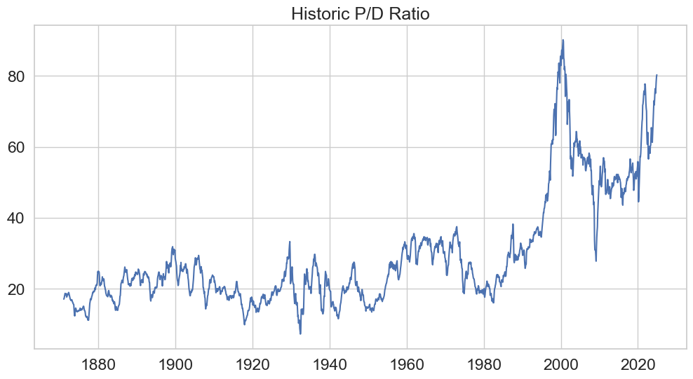
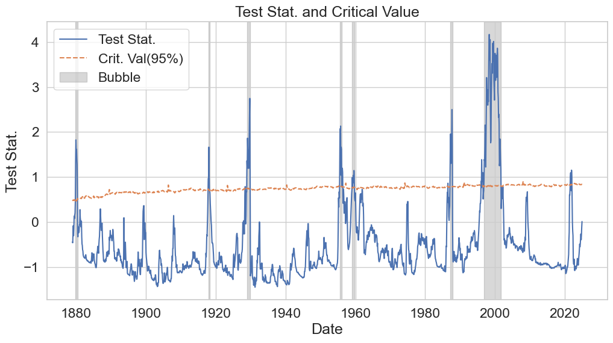
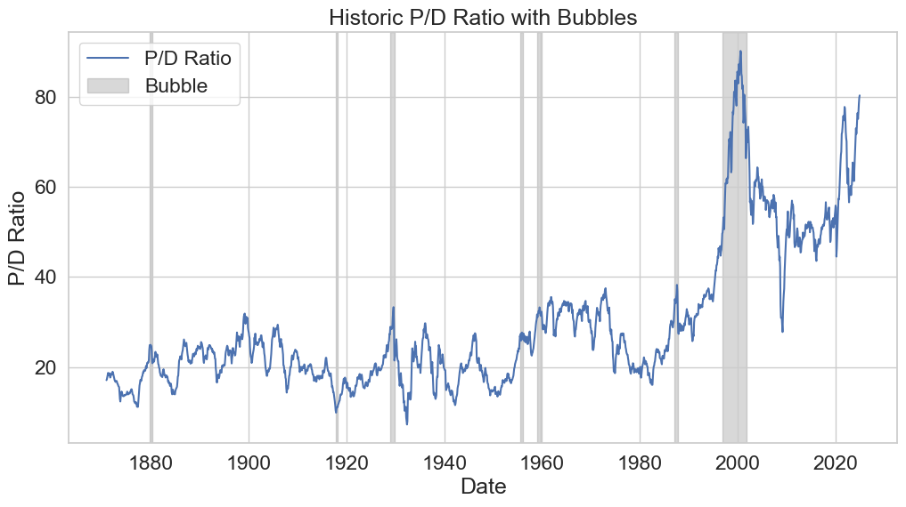

Replication Exercise#
In this exercise we show the validity of the package in replicating Phillips et al. (2015).
We download the CAPE data from the Shiller website to perform the exercise.
[1]:
import pandas as pd
url: str = (
"https://img1.wsimg.com/blobby/go/e5e77e0b-59d1-44d9-ab25-4763ac982e53/downloads/02d69a38-97f2-45f8-941d-4e4c5b50dea7/ie_data.xls?ver=1743773003799"
)
data: pd.DataFrame = (
pd.read_excel(
url,
sheet_name="Data",
skiprows=7,
usecols=["Date", "P", "D", "E", "CAPE"],
skipfooter=1,
dtype={"Date": str, "P": float},
)
.rename(
{
"P": "sp500",
"CAPE": "cape",
"Date": "date",
"D": "dividends",
"E": "earnings",
},
axis=1,
)
.assign(
date=lambda x: pd.to_datetime(x["date"].str.ljust(7, "0"), format="%Y.%m"),
)
.set_index("date", drop=True)
)
We look for the existence of bubbles in the Price-Dividend ratio.
[2]:
pdratio: pd.Series = data["sp500"] / data["dividends"]
pdratio = pdratio.dropna()
[3]:
import matplotlib.pyplot as plt
import seaborn as sns
sns.set_theme(
context="notebook",
style="whitegrid",
font_scale=1.5,
rc={"figure.figsize": (12, 6)},
)
plt.plot(pdratio)
plt.title("Historic P/D Ratio")
plt.show()

Using the psytest package, we first initialize the object using the PSYBubbles function.
[4]:
from psytest import PSYBubbles
from numpy import datetime64
psy: PSYBubbles[datetime64] = PSYBubbles.from_pandas(
data=pdratio, minwindow=None, lagmax=0, minlength=None
)
Then we calculate the test statistics and critical values. We will be using a significance level of 5% using the available tabulated data by setting fast=True.
[5]:
stat: dict[datetime64, float] = psy.teststat()
cval: dict[datetime64, float] = psy.critval(alpha=0.05, fast=True)
Using these objects, we find the occurances of bubbles in the data:
[6]:
bubbles: list[tuple[datetime64, datetime64 | None]] = psy.find_bubbles(alpha=0.05)
[7]:
plt.plot(stat.keys(), stat.values(), label="Test Stat.")
plt.plot(cval.keys(), cval.values(), linestyle="--", label="Crit. Val(95%)")
for i, bubble in enumerate(bubbles):
plt.axvspan(
bubble[0],
bubble[1] if bubble[1] is not None else pdratio.index[-1],
color="gray",
alpha=0.3,
zorder=-1,
label="Bubble" if i == 0 else None,
)
plt.legend()
plt.title("Test Stat. and Critical Value")
plt.xlabel("Date")
plt.ylabel("Test Stat.")
plt.show()

[8]:
plt.plot(pdratio, label="P/D Ratio")
for i, bubble in enumerate(bubbles):
plt.axvspan(
bubble[0],
bubble[1] if bubble[1] is not None else pdratio.index[-1],
color="gray",
alpha=0.3,
zorder=-1,
label="Bubble" if i == 0 else None,
)
plt.legend()
plt.title("Historic P/D Ratio with Bubbles")
plt.xlabel("Date")
plt.ylabel("P/D Ratio")
plt.show()

[9]:
bubbles_table: pd.DataFrame = pd.DataFrame(bubbles, columns=["start", "end"]).assign(
duration=lambda x: x["end"] - x["start"],
)
bubbles_table
[9]:
| start | end | duration | |
|---|---|---|---|
| 0 | 1879-11-01 | 1880-06-01 | 213 days |
| 1 | 1917-11-01 | 1918-05-01 | 181 days |
| 2 | 1929-01-01 | 1929-11-01 | 304 days |
| 3 | 1955-07-01 | 1956-03-01 | 244 days |
| 4 | 1959-02-01 | 1959-10-01 | 242 days |
| 5 | 1987-02-01 | 1987-11-01 | 273 days |
| 6 | 1996-11-01 | 2001-10-01 | 1795 days |
Which match with the ones on the original paper (p.p. 1066).